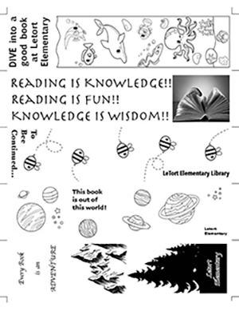

Bryce Reynolds's Print Project |
||
| Home 🏠 Print Project 🖨 Photo Project 📸 Infographic Project 📰 Video Project 🎬 | ||
|
For our print project we had to design and print out bookmarks. We first hand drew a set of 5 designs, that we then critiqued and chose a final one to draw a nicer sketch of. After this was done we used Adobe InDesign to layout and draw our bookmarks. Once this was done we etched our bookmarks onto a lithographic plate, that we then used in the printing press to mass produce them. My bookmark is the bottom one, I wanted to do a nature/adventure styled one. I admittedly should've edited my mountain and tree images so that they could overlap more, but I worried it would be too dark and hard to distinguish. |  | |
| Home 🏠 Print Project 🖨 Photo Project 📸 Infographic Project 📰 Video Project 🎬 | ||
|
© 2024 Bryce Reynolds |
||